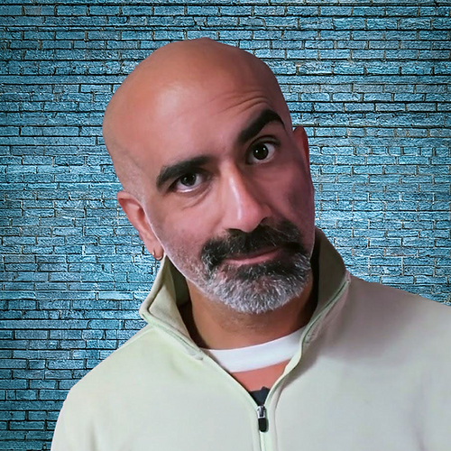

{{ p.catLabel }}
{{ p.date }} · {{ p.read }}
{{ p.title }}
{{ p.excerpt }}
{{ p.author }}
Our cloud security design services ensure organizations can modernize their infrastructure while maintaining security and compliance standards. We specialize in complex migration scenarios that require maintaining operational continuity while enhancing security posture.
360-degree security strategy creation spanning program design, policy development, governance structure, framework/standards mapping, and metrics that deliver a singular goal: assuring clients’ operational efficiency and business growth.
Elite Incident Response assuring containment and eradication of advanced adversaries on compromised networks, identification of human threats, and recommended actions to thwart related attack vectors and tighten business continuity and disaster recovery.
{{ s.body }}
For active incidents, call the hotline directly.
855.787.4370TPO Group specializes in cyber defense for complex, high-stakes environments, including critical infrastructure and government agencies.
{{ s.body }}
{{ svc.body }}
Every engagement is scoped to the client’s environment, sector, and regulatory obligations. To discuss whether this service line fits your needs, request a briefing.
The TPO Group team brings experience at the highest levels of government, the intelligence community, and corporate security, combining executive leadership with technical expertise in comprehensive security.

{{ p.excerpt }}
{{ para }}
Full article to come.